A forecasting and backtesting pipeline for the S&P 500 that is built to avoid the most common mistake in financial ML: letting the future leak into the past. It forecasts from 60-day windows with walk-forward validation, purging and embargoing; benchmarks AR(1), ARIMA, XGBoost, GRU and BiLSTM; builds an attention-based BiLSTM/GRU ensemble tuned with Optuna; and converts forecasts into a transaction-cost-aware trading backtest with position sizing. Python, PyTorch, XGBoost, ARIMA, Optuna. Everything you need for a 30–45 minute interview.
Resume bullets this booklet defends
The one-line version. Predict future S&P 500 returns from the previous 60 days, test the predictions only on data the models never saw, and check whether trading on them would have made money after costs.
Start with an example. Suppose you train a model on randomly shuffled days from 2010–2023 and test it on other random days. A test day in March 2020 may sit between two training days from the same crash week, so the model "knows" what the market was doing around it. It scores brilliantly in testing and fails in real use, where tomorrow is always unknown. This project's rule is simple: every prediction is made only with information available before that day, and validation always trains on the past and tests on the future, with a gap so that overlapping windows cannot leak.
The problem it solves. Financial time series are noisy, non-stationary and autocorrelated, so naive ML evaluation gives misleading results. Even a genuinely better forecast does not automatically make a profitable strategy, because trading adds sizing, costs and risk. The project provides an honest pipeline for both questions: is the forecast better than simple baselines? and is the resulting strategy any good after costs?
Who would use it. Quant researchers testing signals, data scientists building time-series models, and risk-aware portfolio managers who need realistic backtests.
Inputs and outputs. Input: daily S&P 500 data (price-derived features), arranged as 60-day windows [confirm exact features and target: returns are the standard target]. Output: forecasts at several horizons, error metrics per model (MSE), and a backtest report: equity curve, Sharpe ratio, maximum drawdown, turnover.
What makes it technically interesting. Leakage-safe validation (walk-forward, purging, embargo); a spectrum of models from AR(1) to attention-based recurrent networks; and the gap between forecasting accuracy and trading performance.
"I built a forecasting and backtesting pipeline for the S&P 500 designed to avoid look-ahead bias. Each forecast uses the previous 60 days, and validation is walk-forward with purging and embargoing, so the model is always trained on the past and tested on a later period with a gap. I benchmarked AR(1), ARIMA, XGBoost, a GRU and a bidirectional LSTM, then built an ensemble of attention-based BiLSTM and GRU models tuned with Optuna, which reduced forecast MSE by 8.7% relative to AR(1) across several horizons. Then I turned forecasts into positions with position sizing and transaction costs, and backtested on out-of-sample periods: Sharpe 0.78, maximum drawdown 9.3%, at about 110% annual turnover."
Scope boundary. One index (S&P 500), daily frequency, simulated trading. It is not live trading, not a multi-asset portfolio and not an execution system.
No code, notebooks or backtest logs for this project are in the Resume Prep folder, so every resume number is marked UNVERIFIED: your reported result, with the evidence needed to defend it. Numbers in worked examples are ILLUSTRATIVE. Items marked [confirm] are standard choices assumed to explain the bullets.
Confirm before interviewing. (1) The target: daily (log) returns, and the list of horizons ("multiple forecast horizons"). (2) Whether −8.7% MSE is the average across horizons or holds at every horizon. (3) Backtest: gross or net of costs, cost per unit traded (bps), long-only or long/short, the test period, and buy-and-hold Sharpe and drawdown over the same period (the essential comparison). (4) Wording: bullet 3 ends with "at 110% annual turnover temporal splits", which reads as truncated; say "on out-of-sample temporal splits, with 110% annual turnover". (5) The turnover definition (one-way, sum of absolute position changes per year).
| Resume bullet | Concepts you must be able to explain |
|---|---|
| 1. Walk-forward, 60-day windows, purged CV; AR(1), ARIMA, XGBoost, GRU, BiLSTM | Returns and stationarity, autocorrelation, AR(1), ARIMA, lag features and windows, look-ahead bias, walk-forward, purging and embargo |
| 2. Attention BiLSTM/GRU ensemble, Optuna, −8.7% MSE vs AR(1), multiple horizons | LSTM, GRU, bidirectional networks, attention, ensembles, Optuna, horizons, MSE and forecast comparison |
| 3. Cost-aware backtest, position sizing, 0.78 Sharpe, 9.3% max drawdown, 110% turnover | Backtesting, position sizing, transaction costs, turnover, Sharpe ratio, maximum drawdown, forecast vs strategy quality, overfitting |

Step 1: Build the data set. Compute returns from daily index data; build features (lagged returns, rolling volatility, momentum, possibly volume) [confirm features]; form 60-day windows ending at day with targets at each horizon. Reason: every input uses information up to only.
Step 2: Create temporal splits. Walk-forward blocks; for each, purge training samples whose label window overlaps the test block and apply an embargo; fit scalers on training data only. Reason: no boundary leakage, honest out-of-sample record across regimes.
Step 3: Benchmark. Fit AR(1) and ARIMA (rolling refits), XGBoost on lag features, and GRU and BiLSTM on sequences, all on identical splits. Reason: a fair ladder from simple to complex; AR(1) is the bar.
Step 4: Build the ensemble. Add attention to the BiLSTM and GRU encoders, tune each with Optuna on validation blocks inside the training period, train several seeds, and average [confirm weights]. Reason: attention helps focus; ensembling reduces variance.
Step 5: Evaluate forecasts. Out-of-sample MSE per horizon versus AR(1) (−8.7%), with a Diebold-Mariano test and directional accuracy. Reason: separates skill from noise.
Step 6: Backtest. Convert forecasts into sized positions, decided at day and earning ; charge costs on position changes; compute Sharpe, drawdown and turnover only on out-of-sample periods; compare with buy-and-hold. Reason: converts forecast quality into economic value under realistic frictions.

Block lengths are ILLUSTRATIVE. The out-of-sample backtest concatenates the test blocks, so every trade uses a model trained only on earlier data.
| Claim | What it means and how it is computed | Baseline and what could mislead | Status |
|---|---|---|---|
| 60-day windows | Inputs are the last 60 trading days up to | Overlapping windows leak under random splits | UNVERIFIED |
| −8.7% MSE | , out-of-sample | Average vs per horizon; DM test; leakage | UNVERIFIED |
| 0.78 Sharpe | Annualised mean / std of daily strategy returns | Gross vs net; vs buy-and-hold; SE ≈ 0.5 over 5 y | UNVERIFIED |
| 9.3% max DD | Worst peak-to-trough fall of the equity curve | Period-dependent; compare with index DD | UNVERIFIED |
| 110% turnover | per year | Definition (one-way vs two-way) | UNVERIFIED |
To defend these, bring: the split dates and gap lengths, per-horizon MSE for every model, the DM statistics, the sizing rule and cost assumption, the equity curve against buy-and-hold, and results for a few cost levels.
1. Walk-forward with purge and embargo instead of random K-fold. Why: random folds put overlapping windows and future information into training; walk-forward mimics deployment and purging removes label overlap. Alternative: shuffled K-fold. Trade-off: fewer, noisier evaluation folds, and early folds have less training data.
2. AR(1) as the reference baseline. Why: simple, hard to beat honestly on returns, and nests the "predict the mean" forecast. Alternative: comparing only against other neural networks. Trade-off: beating AR(1) shows forecast skill but not trading value.
3. A ladder of models (ARIMA, XGBoost, GRU, BiLSTM) instead of one deep model. Why: shows where the gain comes from: linear structure, non-linear lag interactions, or sequence modelling. Alternative: only the final model. Trade-off: more compute and more comparisons, which raises multiple-testing risk.
4. Attention-based BiLSTM + GRU ensemble. Why: attention lets the model weight informative days; two different recurrent architectures make partly uncorrelated errors, so averaging reduces variance. Alternative: a single LSTM or a transformer. Trade-off: complexity and lower interpretability than ARIMA.
5. Optuna tuning inside training periods. Why: efficient search over many coupled hyperparameters without touching test blocks. Alternative: manual or grid search. Trade-off: too many trials still overfit validation blocks.
6. Evaluate trading separately, net of costs, with sizing. Why: MSE does not equal profit; costs and sizing decide whether a forecast is usable. Alternative: reporting MSE or directional accuracy only. Trade-off: backtest results depend on cost and sizing assumptions, which must be stated.
"Financial forecasting is dominated by leakage: random splits and overlapping windows make models look far better than they are. I built an S&P 500 pipeline where every forecast uses only the previous 60 days, and validation is walk-forward, training on the past and testing on the next block, with a purge gap so multi-day labels cannot overlap the test period.
I benchmarked AR(1), ARIMA, XGBoost, a GRU and a bidirectional LSTM on identical splits, then built an ensemble of attention-based BiLSTM and GRU models tuned with Optuna. It reduced out-of-sample MSE by 8.7% relative to AR(1) across several horizons.
Because lower MSE doesn't automatically mean profit, I also built a backtest: forecasts become sized positions, decided today and earning tomorrow's return, with transaction costs on every change. Out of sample it delivered a 0.78 Sharpe with a 9.3% maximum drawdown at about 110% annual turnover."
"Problem. I wanted to know two things honestly: can more complex models forecast index returns better than simple baselines, and would that translate into a usable strategy after costs?
Data and leakage control. Daily S&P 500 data, converted to returns because prices are non-stationary. Each sample is a 60-day window ending at day t, with targets at several horizons. Random splits would put nearly identical overlapping windows in train and test, so I used walk-forward splits. A training sample's label looks h days ahead, so I purge training samples whose label window overlaps the test block and add an embargo. Scalers are fitted on training data only.
Models. AR(1) is the baseline: tomorrow's return as a fraction of today's. ARIMA adds more lags and moving-average terms. XGBoost uses flattened lag features. GRU and BiLSTM read the window as a sequence. The final model adds attention, which learns which of the 60 days matter, to a BiLSTM and a GRU, tunes each with Optuna on validation blocks inside the training period, and averages them.
Forecast result. Out-of-sample MSE fell 8.7% relative to AR(1) across horizons. For daily returns that is a large improvement, so significance testing with Diebold-Mariano matters.
Trading. The position is decided at day t's close from the forecast, sized by forecast strength relative to volatility, and earns day t+1's return; costs are charged on position changes. On the out-of-sample periods: 0.78 Sharpe, 9.3% maximum drawdown, 110% annual turnover.
Key decisions. Walk-forward with purging; AR(1) as the bar; a ladder of models to locate the gain; ensembling to reduce variance; and judging trading separately from forecasting."
"I'll go deeper on leakage, the models, forecast evaluation, the backtest and limitations.
Leakage control in detail. Three mechanisms. First, windows end at t and use only past data; features like rolling volatility are trailing, never centred. Second, normalisation statistics come only from the training block. Third, purging: a sample at t has a label built from returns up to t+h, so if t+h is inside the test block the label contains test information; those samples are removed, and an embargo removes samples just after a test block in folds where training data follow it.
Models. AR(1) and ARIMA are linear and refitted as the window rolls. XGBoost captures non-linear interactions among lags but has no notion of order beyond features. GRU and LSTM carry a gated memory through the sequence; a BiLSTM reads the window in both directions, which is legitimate because the window ends at t. Attention computes a softmax weight for each day's hidden state and forms a weighted context vector. The ensemble averages two architectures whose errors are imperfectly correlated, which reduces variance, the main problem with neural nets on noisy data.
Forecast evaluation. I compare against AR(1) on identical out-of-sample points at each horizon. The 8.7% MSE reduction is equivalent to an out-of-sample R-squared of 8.7% relative to AR(1). That is high for daily returns, so the right follow-ups are a Diebold-Mariano test and a check that it holds across folds rather than in one period.
Backtest. PnL is the position decided at t times the return from t to t+1, minus cost times the absolute change in position. Turnover is the sum of absolute position changes, annualised: 110% is modest, so at a few basis points per unit traded the cost drag is small. Sharpe is the annualised mean over standard deviation of daily returns: 0.78. Maximum drawdown is the worst peak-to-trough fall: 9.3%.
Interpretation and limitations. First, the essential comparison is buy-and-hold over the same period; a 9.3% drawdown is much smaller than index drawdowns in 2020 or 2022, which suggests the strategy was de-risked at times, but its Sharpe must be compared with the index's. Second, the standard error of a Sharpe over five years is about 0.5, so 0.78 is suggestive, not proof. Third, I tested several models and settings, so the best result is somewhat inflated; a final untouched period or a deflated Sharpe ratio would correct for that. Fourth, one index is a single bet; a cross-section of assets would give far more independent evidence. Next steps: those corrections, cost sensitivity, and a loss function closer to trading objectives."
It forecasts S&P 500 returns and tests whether those forecasts are useful, while carefully preventing future information from leaking into training. Each forecast uses only the previous 60 trading days. Validation is walk-forward: train on the past, leave a purge gap, test on the next block, roll forward. I benchmarked five models on identical splits: AR(1), ARIMA, XGBoost, GRU and a bidirectional LSTM. The final model is an ensemble of attention-based BiLSTM and GRU networks tuned with Optuna, which reduced out-of-sample MSE by 8.7% relative to AR(1) across several horizons. Then a backtest converts forecasts into sized positions with transaction costs: 0.78 Sharpe, 9.3% maximum drawdown, 110% annual turnover on out-of-sample periods. It is a research pipeline with simulated trading, not a live strategy.
Because time-series observations are ordered and dependent. A random split breaks both properties. First, it lets the model learn from the future: a test day in March 2020 could have training days from the same week on both sides, so the model effectively knows the market regime around it. Second, consecutive samples are near-duplicates here: 60-day windows for days and share 59 days, so random splitting puts almost identical inputs in train and test, which inflates scores. Third, it hides non-stationarity: real performance changes across regimes, and a random split averages over them. In deployment you always predict the unknown future from the known past, so evaluation must do the same: train on earlier periods, test on later ones, with a gap at the boundary when labels look ahead.
A stationary series has constant statistical properties over time: mean, variance and autocorrelation do not drift. Prices are not stationary: they trend and wander with no fixed level, like a random walk. Returns, the percentage or log change from one day to the next, are approximately stationary in mean, although their volatility clusters. Models learn patterns from the past and assume they persist, so they work far better on stationary inputs. Modelling prices also produces a trap: predicting "tomorrow's price equals today's" gives a tiny MSE relative to the price level, so almost any model looks accurate while having no skill. On returns, the naive forecast is "about zero", and beating it requires genuine information. The ADF test can confirm non-stationarity of prices. In my pipeline, returns are the forecast target [confirm].
AR(1) is a first-order autoregressive model: . Tomorrow's return is a constant plus a fraction of today's return plus noise. For daily index returns, is close to zero, so the forecast is close to the average return. It is the right baseline for three reasons. It is cheap and almost impossible to overfit. It nests the most naive forecasts ("predict zero" or "predict the mean"). And beating it honestly on returns is hard, so it is a meaningful bar: if a deep network cannot beat AR(1) out of sample, it has no real skill and is probably fitting noise. That is why my headline forecast result is stated relative to AR(1): 8.7% lower MSE.
ARIMA() has three parts. AR(), autoregressive: the value depends on its own previous values. I(), integrated: difference the series times to make it stationary; a price series becomes a return series with , so for returns is usual. MA(), moving average: the value also depends on the previous forecast errors, capturing short-lived shocks. Orders are chosen with ACF and PACF plots or by minimising AIC or BIC, and the model is refitted as the window moves forward. ARIMA assumes linear relationships, constant parameters and roughly constant variance. It fails with non-linear dynamics, regime changes and volatility clustering. It is a strong classical benchmark: if a neural network does not beat ARIMA, the extra complexity is not justified.
It evaluates a model the way it would be used in real time. Split history into consecutive blocks. For the first fold, train on the early years and test on the next block; for the next fold, extend (or roll) the training window forward and test on the following block; continue to the end. Every prediction is made by a model trained only on earlier data, and the concatenated test blocks form a continuous out-of-sample record covering different regimes, which also feeds the backtest. Expanding windows use all past data; rolling windows use a fixed recent length and adapt faster to regime change. Hyperparameter tuning happens on validation blocks inside each training period, never on the test block. The cost is fewer, noisier evaluation folds than random K-fold, which is a price worth paying for honesty.
They prevent leakage at the boundary between training and test data. A sample at day with a 5-day horizon has a label built from returns on days to . If the test block starts at day , that training label contains returns from the test period: information the model should not have. Purging removes every training sample whose label window overlaps the test block, which in walk-forward means leaving a gap of at least the horizon before the test block. Embargoing additionally drops training samples immediately after a test block (relevant when training data come after it, as in purged K-fold), because autocorrelation lets those samples carry information about the test period. The leak grows with the horizon, so multi-horizon forecasting needs a gap at least as long as the longest horizon [confirm your gap length].
Both are recurrent neural networks: they read a sequence step by step, updating a hidden state that acts as memory. Plain RNNs struggle with long sequences because gradients vanish. LSTMs add a separate cell state and three gates: the forget gate decides what to erase, the input gate what to write, and the output gate what to expose; the additive cell update lets information and gradients persist. GRUs simplify this to two gates, update and reset, with no separate cell state; the update gate interpolates between the old hidden state and a new candidate. GRUs have fewer parameters, train faster and often match LSTMs on moderate sequence lengths like 60 days. In noisy financial data, both overfit easily, so regularisation (dropout, early stopping) and ensembling matter more than the choice between them.
Not if the window ends at the forecast origin. A BiLSTM runs one LSTM forward over the window (day to day ) and another backward over the same window (day to day ), then combines their states. Both directions see only days up to , the information available when the forecast is made. Reading backwards simply gives each position in the window context from both sides, which can help the model summarise the window. It would be cheating only if the window extended beyond , for example if the sequence included the days being forecast, or if features were computed with centred rolling windows. To defend this, I show how windows are constructed: input indices end at , and the target starts at . This is a common interview trap, so it is worth stating clearly.
It lets the model decide which days in the 60-day window matter most for the current forecast. Without attention, a recurrent model typically uses only its final hidden state, which must compress the whole window. With attention, every day's hidden state gets a score (from a small learned network), the scores go through a softmax to give weights that sum to one, and the model uses the weighted average . If a volatility shock eight days ago is informative, its weight can be large. Benefits: better use of long windows, and interpretable weights showing where the model looks. Limitations: attention weights are not guaranteed explanations, and on noisy data extra flexibility adds variance, which is one reason I combined models in an ensemble.
MSE is the average squared difference between forecast and actual value over out-of-sample points. The reduction is : if AR(1)'s MSE is , the ensemble's is (ILLUSTRATIVE). It is equivalent to an out-of-sample of 8.7% relative to AR(1). Conditions for it to mean anything: identical test points for both models, purely out-of-sample, at each horizon. "Across multiple forecast horizons" must be stated precisely: an average over horizons, or at every horizon [confirm]. For daily index returns, 8.7% is a large improvement, so I would support it with a Diebold-Mariano test, per-fold results showing consistency across regimes, and evidence that no leakage occurred. MSE also does not equal trading value, which is why there is a separate backtest.
Because MSE and profit reward different things. MSE averages squared errors over all days equally and favours forecasts shrunk toward zero; a model can cut MSE by being more conservative on quiet days without improving its calls on the few large-move days that dominate profit. Trading profit depends on the sign and relative size of forecasts at the moments that matter, after sizing and costs. Two models with the same MSE can have different directional accuracy, and a lower-MSE model can trade more and pay more costs. That is why forecast quality and strategy quality are separate claims in my project: MSE versus AR(1) for the first, Sharpe, drawdown and turnover after costs for the second. Metrics closer to trading, like directional accuracy or correlation between forecast and return, help bridge the gap.
The Sharpe ratio is average excess return divided by the volatility of returns, annualised: for daily returns, mean over standard deviation times . A Sharpe of 0.78 means the strategy earned 0.78 units of annual excess return per unit of annual volatility; for example 7.8% excess return at 10% volatility (ILLUSTRATIVE). By itself, 0.78 is moderate. Its meaning depends on three comparisons. Buy-and-hold over the same period: the index has historically delivered a Sharpe somewhere around 0.4–0.8 depending on the period, so the strategy must be compared on identical dates. Gross versus net: it should be after costs [confirm]. Statistical uncertainty: the standard error is roughly , about 0.5 over five years, so 0.78 is not decisively different from zero.
Maximum drawdown is the largest percentage fall from a running peak of the equity curve to a later trough, before a new peak. If the strategy grew from 100 to 120 and then fell to 108.8 before recovering, the drawdown is . It measures the worst loss an investor would have lived through, which matters for risk limits and for whether anyone would keep running the strategy. Unlike Sharpe, it depends on the order of returns, not only their distribution. Interpretation needs context: the S&P 500 itself fell over 30% in early 2020 and about 25% in 2022. A 9.3% maximum drawdown in a period containing those events implies the strategy was often reduced or out of the market, which is good if Sharpe is comparable to the index. I need to know the exact test period [confirm].
Turnover measures how much the strategy trades: the sum of absolute position changes, annualised. With positions as a fraction of capital, 110% annual turnover means total position changes over a year equal 1.1 times capital, for example moving between fully invested and half invested about twice a year, or many small adjustments. Costs are charged on every change: PnL on day is , where covers spread, commission and slippage per unit traded. The annual cost drag is roughly turnover times : at 110% and 5 bps, about 0.055% per year, small for a liquid index. That is why at this turnover the main risks are timing errors and overfitting rather than costs. I should state the cost level I used and whether 110% is one-way [confirm].
Sizing turns a forecast into how much to hold. The simplest rule is the sign: fully long if the forecast is positive, flat or short if negative. That ignores confidence and trades a lot on tiny forecasts. A better rule scales the position with forecast strength relative to risk, for example : larger positions when the forecast is strong relative to predicted volatility, smaller in turbulent periods, capped at full exposure. Volatility scaling also tends to reduce drawdowns, because exposure falls when volatility spikes. A threshold (no trade unless the forecast exceeds a band) reduces turnover. The position must be decided with information up to day and earn the return from to [confirm your exact rule and whether shorting was allowed].
Four checks. Benchmark: compare with buy-and-hold over exactly the same out-of-sample dates; if the index delivered 0.75, the strategy's value lies mainly in lower drawdown, not better risk-adjusted return. Also check correlation with the index: a timing strategy with lower beta and similar Sharpe can still be useful. Net of costs: confirm costs were deducted, and show sensitivity at 2×, 5× costs. Statistical significance: the standard error of an annualised Sharpe is roughly ; over five years about 0.5, so 0.78 is about 1.5 standard errors, suggestive but not conclusive. Selection bias: I tried several models and settings; the deflated Sharpe ratio adjusts for the number of trials. Finally, stability: Sharpe per fold or per year shows whether it comes from one lucky period.
Use the Diebold-Mariano test. For each out-of-sample point, compute the loss difference . If the ensemble is better, the mean of is positive. The DM statistic is that mean divided by its standard error, where the standard error uses a heteroskedasticity- and autocorrelation-consistent (Newey-West) estimate, because loss differences are serially correlated, especially for multi-day horizons with overlapping targets. Under the null of equal accuracy it is approximately standard normal. I would run it at each horizon and also report the improvement per walk-forward fold: a genuine improvement should appear in most folds, not just one volatile period. Because financial errors are fat-tailed, a few extreme days can dominate MSE, so checking MAE or a trimmed comparison guards against one crash day driving the result.
At several levels. Data: walk-forward splits with purging mean the test blocks are never seen during training or tuning. Tuning: Optuna optimised validation loss on blocks inside each training period, so hyperparameters were chosen without the test data; a modest number of trials limits how much the search can exploit noise. Model: dropout, weight decay, early stopping on validation loss, small networks relative to the data (a few thousand daily samples is small for deep learning), and gradient clipping for stability. Variance reduction: multiple random seeds and an ensemble of two architectures. Comparison discipline: every model sees identical splits, and AR(1) sets the bar. What remains is selection across many configurations on one history; a final, never-touched test period or a deflated Sharpe ratio addresses that [confirm which you used].
Each captures different structure. ARIMA captures only linear dependence on recent returns and errors; for daily index returns that structure is weak, so it rarely beats AR(1) by much. XGBoost captures non-linear interactions between lag and volatility features and is robust with small data, but treats the window as an unordered feature set and can overfit noisy targets; with good features it is often a tough benchmark. GRU/BiLSTM model order and can learn temporal patterns, but need more data and are high-variance; with a few thousand daily samples they can easily underperform simpler models. Attention plus ensembling reduced that variance, which is plausibly why the final model won. The honest framing: the result is specific to this data and setup, and with so few independent observations, differences between the complex models may not be significant.
The common traps. Look-ahead in timing: using the day- return with a position formed at day 's close; the position must earn . Feature leakage: centred windows or full-sample scaling. Overlapping labels without purging. Data snooping: trying many models, windows and thresholds and reporting the best. Unrealistic costs or execution: trading at the close price you used to compute the signal, ignoring slippage. Period dependence: a test period dominated by one regime. Missing benchmark: a Sharpe without buy-and-hold on the same dates. Annualisation errors: wrong scaling for overlapping multi-day returns. For an index, survivorship bias is not an issue, but it would be for individual stocks. Defences: code that structurally separates "decide at " from "earn at ", explicit cost sensitivity, a final untouched period, and per-year results.
Models trained on calmer periods see inputs outside their training distribution: volatility several times higher, extreme daily moves, and different autocorrelation. Forecast errors explode, and because MSE squares errors, a few such days can dominate a whole fold's MSE, so per-fold results matter. Recurrent models may produce unstable forecasts on out-of-range inputs; feature normalisation fitted on calm data amplifies this. In the backtest, volatility-scaled sizing helps: exposure falls automatically when volatility spikes, which limits drawdowns, and is probably part of why the maximum drawdown is 9.3%. Mitigations: include volatility features so models condition on regime, use rolling rather than expanding windows to adapt faster, retrain regularly in walk-forward fashion, cap positions, and evaluate separately in high- and low-volatility regimes to see where the edge actually lives.
Neural forecasts on noisy data have high variance: different seeds and hyperparameters give noticeably different predictions. If two models' errors have similar variance and correlation , their average has error variance , lower than either model alone. A BiLSTM and a GRU differ in architecture, so their errors are only partly correlated, and averaging them, plus several seeds each, is an efficient variance reduction. Weights: equal weights are robust and hard to overfit, and are often the best choice when validation data are limited; optimised weights (minimising validation MSE, possibly constrained to be non-negative and sum to one) can help but risk fitting noise. In walk-forward fashion, any weights must be chosen using only data before each test block [confirm what you used].
Two main strategies. Direct: train a separate model, or a separate output head, for each horizon , with the target being the return over the next days. Errors do not compound, and each horizon gets its own fit; this is natural for neural networks with a multi-output head. Recursive: train a one-step model and feed its predictions back as inputs to reach longer horizons; one model, but errors accumulate, and for near-unpredictable returns the recursive forecasts quickly collapse to the mean. For return forecasting, direct is usually preferred. Longer horizons have overlapping targets, which creates serially correlated errors (relevant for significance tests) and requires a longer purge gap. Comparisons against AR(1) must be made per horizon, because improvements typically differ by horizon [confirm your horizons and approach].
Five directions. Stronger evidence: a final untouched test period, Diebold-Mariano tests per horizon, deflated Sharpe for the number of configurations tried, and per-year results. Breadth: one index gives few independent observations; applying the same pipeline to many assets (sector ETFs, other indices, or a cross-section of stocks) gives far more evidence and enables cross-sectional strategies. Better targets and losses: forecast volatility (much more predictable than returns) and use it for sizing, or train with a loss closer to trading objectives, such as maximising a differentiable Sharpe or weighting errors by move size. Realism: cost sensitivity, execution at the next open rather than the signal close, and borrowing costs if shorting. Simpler competitors: a volatility-targeted buy-and-hold is a demanding benchmark, because it captures much of the drawdown reduction with no forecasting at all.
Selecting the best of backtests inflates its Sharpe even if every strategy has zero true skill: the maximum of noisy estimates is biased upward. The deflated Sharpe ratio (Bailey and López de Prado) handles this. First estimate the Sharpe you would expect from the best of independent zero-skill trials, roughly for large , where is the spread of Sharpe ratios across trials. Then compute the probability that the observed Sharpe exceeds that threshold, adjusting for sample length, skewness and kurtosis of returns. Practical steps: count every configuration genuinely tried (models, windows, thresholds, sizing rules); estimate the effective number of independent trials, because many configurations are correlated; report the deflated value alongside 0.78. A simpler complement is holding back a final period, never used for any decision, and reporting the Sharpe there once.
S&P 500 forecasting with strict leakage control: 60-day windows ending at , walk-forward splits, purge gap ≥ horizon, embargo, training-only scaling. Benchmarks: AR(1), ARIMA, XGBoost, GRU, BiLSTM. Final: attention-based BiLSTM + GRU ensemble tuned with Optuna, −8.7% out-of-sample MSE vs AR(1) across horizons. Backtest: sized positions decided at , earning , costs on : 0.78 Sharpe, 9.3% max drawdown, 110% annual turnover.
Daily data → returns + features → 60-day windows → walk-forward splits (purge, embargo) → 5 benchmarks + attention ensemble (Optuna) → out-of-sample MSE per horizon → sizing → costs → Sharpe, max DD, turnover vs buy-and-hold.
| Metric | Definition |
|---|---|
| MSE cut | |
| Sharpe | |
| Max DD | worst peak-to-trough fall |
| Turnover |
One index (few independent bets); Sharpe SE ≈ 0.5 over 5 years; selection across many configs; regime dependence; target, horizons, costs and buy-and-hold to confirm; numbers UNVERIFIED.